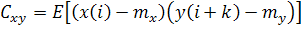
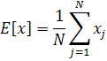
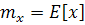
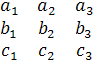

M = rot3d_Covariance [x,y,z]
[lambda,V] = rot3d_CovarianceEigenSystem [x,y,z]
M = rot3d_Covariance [x,y,z]
Returns the covariance matrix of a set of points in three dimensions whose coordinates are given in the three vectors x, y and z; unit extension applies. The cross-covariance function of random variable x is given by:

where:

and:

is the mean of x. In other words, the mean is subtracted from each
point during the calculation, thus the points need not have zero mean.
If the points are sufficiently non-coplanar, the matrix will be positive definite. The returned matrix M is given as a vector of row-vectors; e.g. the matrix:

is returned as:
[ [a1,a2,a3], [b1,b2,b3], [c1,c2,c3] ]
The covariance matrix is used for fitting; its eigenvectors and eigenvalues
can be obtained using rot3d_CovarianceEigenSystem.
[lambda,V] = rot3d_CovarianceEigenSystem [x,y,z]
Computes the covariance matrix of a set of points (as in rot3d_Covariance), and computes all of the eigenvectors (orthonormal) and eigenvalues of the matrix.
The three eigenvalues are returned in the vector lambda, sorted from largest to smallest. The corresponding eigenvectors are returned in vector V; that is, V(i) is the eigenvector of the eigenvalue lambda(i).
The eigenvector of the largest eigenvalue gives the long axis through a set of points. The eigenvector of the smallest eigenvalue, for sufficiently coplanar points, gives a normal to a plane through the points.
MOE Table of Contents SVL Function Index